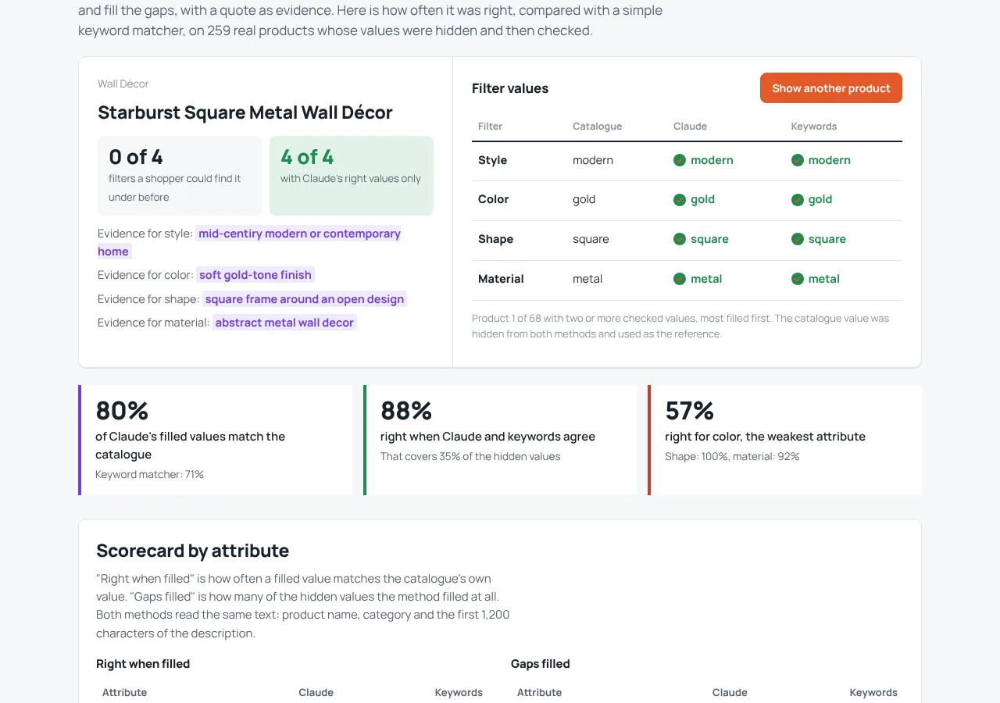

The question
In the WANDS furniture catalogue, 42% of products have a usable style value, 28% a color, 23% a material and 18% a shape. A product without a value never appears when a shopper filters by it. Can AI fill these gaps, and which of its values can go live without a person checking them?

Approach
- Took 300 products that already have values, hid the values, and used them only for scoring. 20 other products were used to check the prompt.
- An n8n workflow sends ten products per call to Claude, which picks one value per attribute from a fixed list, or "not stated", with a quote from the text.
- A check step in code proposes a value only if it is on the list and its quote is really in the text. Nothing is written to the catalogue.
- A keyword matcher with no AI ran on the same text as the baseline.
Headline numbers
| Measure | Claude | Keywords |
|---|---|---|
| Right when it fills a value | 80% | 71% |
| Hidden values filled | 44% | 47% |
| Shape: right when filled | 100% | 100% |
| Material: right when filled | 92% | 84% |
| Color: right when filled | 57% | 38% |
259 WANDS products, 379 hidden values, run 20 Nov 2026 with Claude Haiku in n8n Cloud.
Findings
When two methods agree, the value can go live
When Claude and the keyword matcher give the same value, they are right 88% of the time (115 of 131). Filling automatically only those fills 35% of the gaps with 16 wrong values. Filling automatically every Claude answer fills 44% with 34 wrong values. When they disagree, Claude is right only 39% of the time, so a person decides.
Decide per attribute
Shape and material were reliable. Color was right only 12 of 21 times, often because the text describes several parts or a different variant.
Some errors are catalogue errors
In 16 of Claude's 21 wrong style values, the quoted text names Claude's style directly, for example "a traditional chandelier design" on a product labelled farmhouse. The label or the text is wrong, and the dataset cannot say which.
The format, not the model, broke first
n8n's structured output step rejected 7 of 10 batches, losing ten products each time. Switching to one plain line per product, checked line by line in code, fixed it. 41 products still came back empty or cut off, which looks like an AI credit limit. They are listed, and both methods are scored on the same 259 products.
What I learned as a PM
- Compare an AI feature with the cheapest method without AI first. Here the keyword matcher was 9 points behind on accuracy and slightly ahead on coverage.
- Two cheap signals that agree can be the release rule. It is easy to explain to a catalogue team.
- Labels are not ground truth. Disagreements also point at bad catalogue data.
What I would do next
- Rerun the 41 missing products with a paid key, and confirm the credit limit.
- Add a review screen in n8n for the values a person must check, and time the reviews.
- Run the agreement rule on products with no values, and have a person check a sample.
Limits: one catalogue, English text, four attributes, one model. Shape and color had few filled values, so those rates are rough.